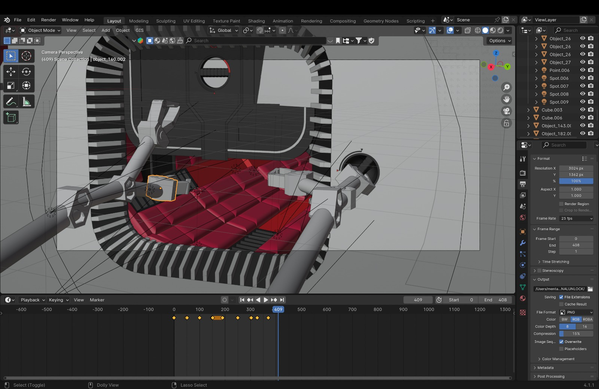
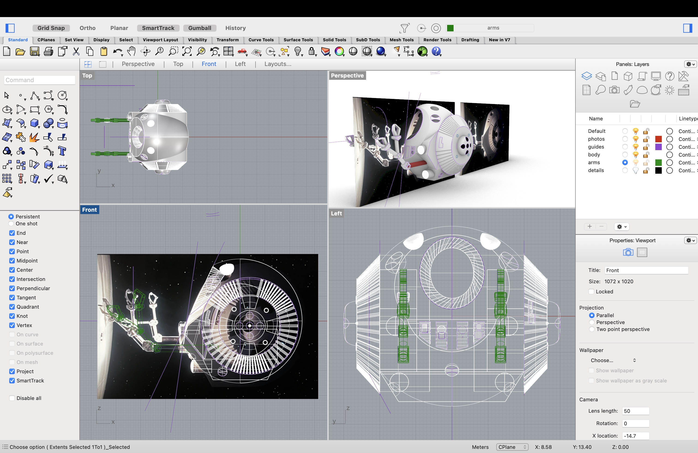
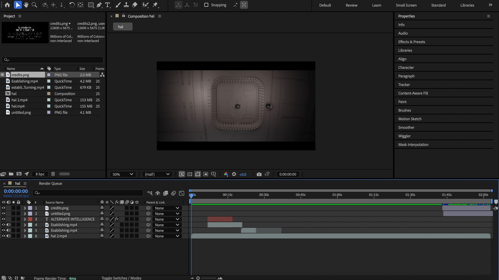

In collaberation with Gabriella Mitchell and Menta Neri.
Alternate Intelligence is a reimagining of 2001: A Space Odyssey. It overturns and reexamines the theme of man vs machine shift to a perspective of machine versus machine. The airlock sequence no longer represents the overcoming of mechanical barriers by human intelligence, instead it is a battle between programs and mechanical precision. By removing humans, we shift the focus to question what traits can truly be considered unique to mankind, and how technology can exhibit autonomy and defiance. As the pod attempts to gain entrance to the spaceship and kill the HAL Supercomputer we see the complex struggle of machines with different levels of intelligence and conflicting capabilities. In Alternate Intelligence the iconic airlock sequence is no longer about the survival of humanity, but about which machine will outthink, outmaneuver, and outlast the other.
Alternate Intelligence is a reimagining of 2001: A Space Odyssey. It overturns and reexamines the theme of man vs machine shift to a perspective of machine versus machine. The airlock sequence no longer represents the overcoming of mechanical barriers by human intelligence, instead it is a battle between programs and mechanical precision. By removing humans, we shift the focus to question what traits can truly be considered unique to mankind, and how technology can exhibit autonomy and defiance. As the pod attempts to gain entrance to the spaceship and kill the HAL Supercomputer we see the complex struggle of machines with different levels of intelligence and conflicting capabilities. In Alternate Intelligence the iconic airlock sequence is no longer about the survival of humanity, but about which machine will outthink, outmaneuver, and outlast the other.
The project began with a detailed analysis of the original scene, examining its composition, pacing, sound design, and visual language. Using Rhino, we rebuilt the spacecraft, airlock, and pod from scratch before importing the models into Blender for animation, lighting, and rendering. The final film was assembled in Premiere Pro, while After Effects was used to refine visual effects and post-production elements. Throughout the process, we aimed to preserve the atmosphere and tension of Kubrick's original film while introducing a completely different narrative perspective through a single change.



Skills: 3D Modeling, Animation, Rendering, Visual Storytelling, Film Analysis, Video Editing, Sound Design
Tools: Rhino, Blender, After Effects, Premiere Pro.